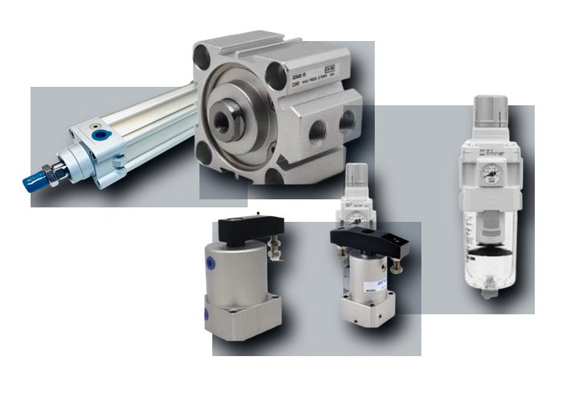
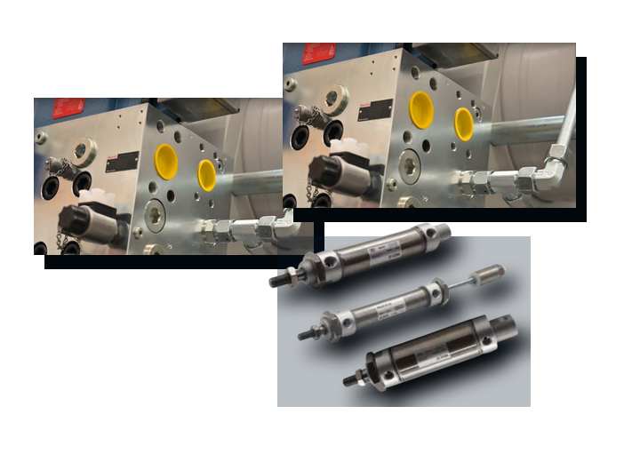
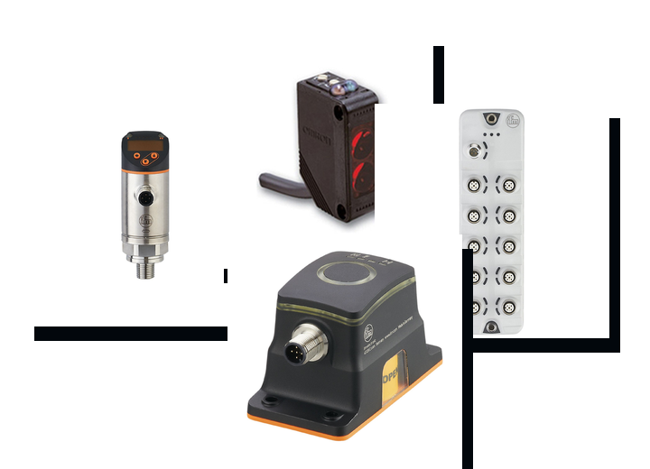
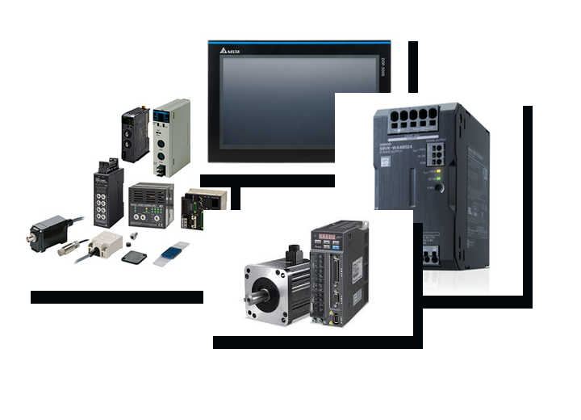
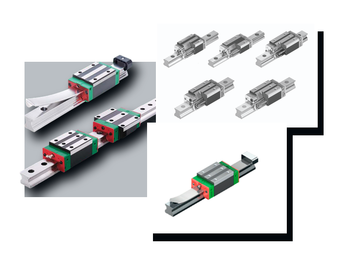
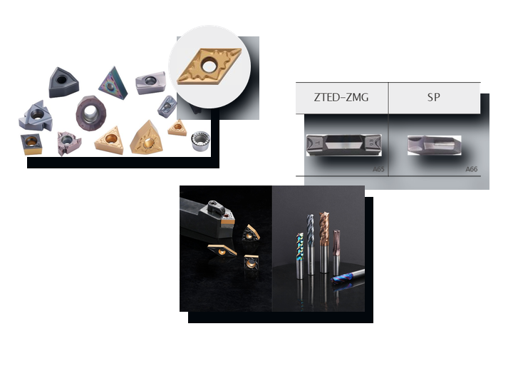
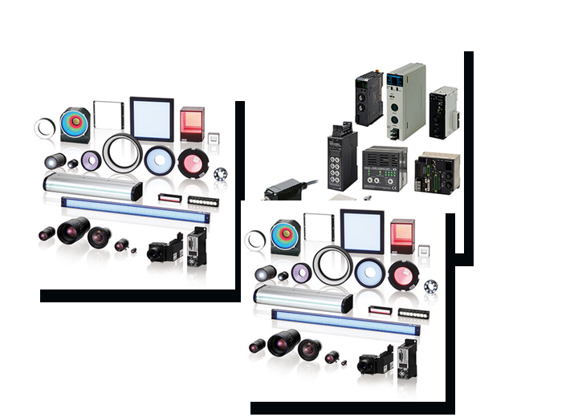
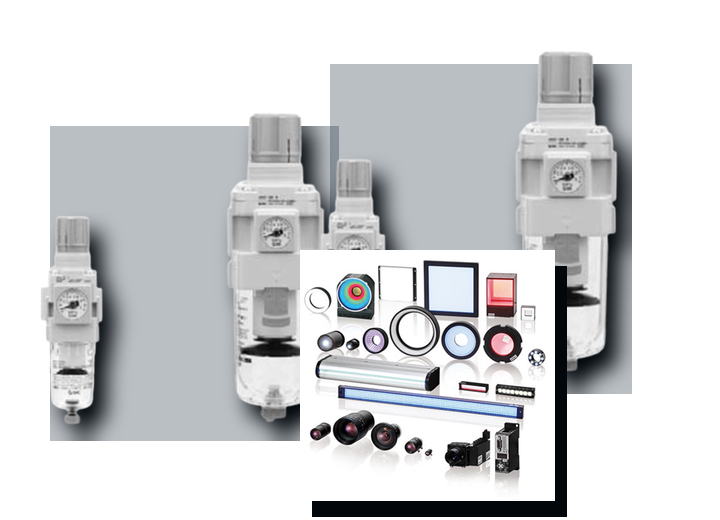

Productos y refacciones industriales
Categorias KDL para neumática, hidráulica, sensores, automatización, movimiento lineal, herramientas de corte, refrigeración IQF y suministros.

Cilindros, grippers, conexiones y tratamiento de aire para automatización.

Potencia hidráulica para prensas, inyección y maquinaria pesada.

Detección, medición, visión, RFID y comunicación industrial.

PLC, HMI, variadores, servos y comunicación de procesos.

Guías, husillos, actuadores y sistemas multieje de precisión.

Insertos de torneado, fresado, ranurado y carburo sólido.

Congelación rápida y línea de frío para alimentos y acuacultura.

Componentes de tablero y distribución. Consulta modelos con un asesor.

Componentes para mantenimiento y proyectos. Cuéntanos qué necesitas.